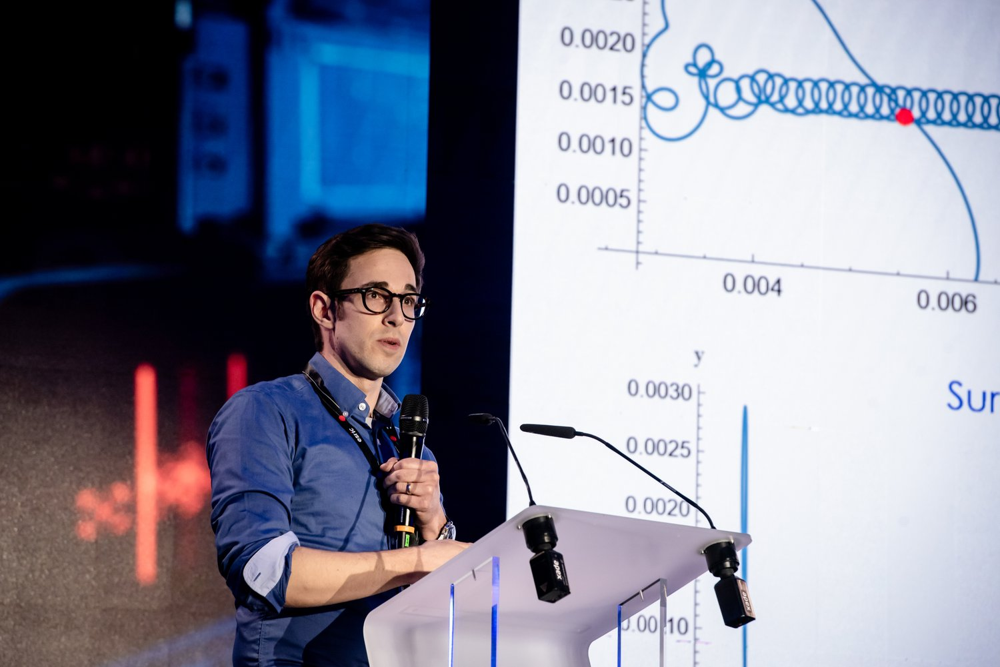

Engineer.
Researcher.
Educator.
I work at the intersection of mineral processing, space resources and strategic engineering.

My training spans mechanical engineering at the University of Waterloo, space science at the International Space University and a PhD in Mineral Processing Engineering at Imperial College London.
I’m a Research Associate in Imperial’s Strategic Engineering Laboratory. My wider experience includes lunar mineral processing engineering at ispace Europe. Across these settings, I’m interested in how experimental evidence and modelling can inform practical decisions.
A major part of my work concerns terrestrial dry beneficiation, including characterisation, experimental testing, moisture sensitivity, separation diagnostics and process flowsheet evaluation.
I also teach space mining, supervise student research and contribute to public outreach, making resource engineering accessible beyond the laboratory.